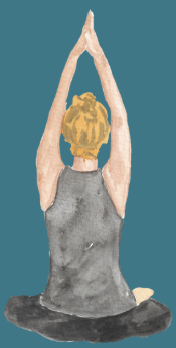
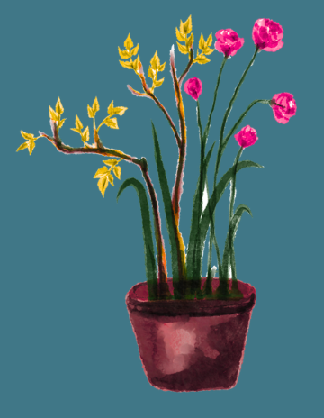

How to heal from emotional abuse and bullying

Physical Symptoms of Bullying Stress
Spending every day being subject to passive aggressive comments, dirty looks and snide remarks is likely putting you in a state of hypervigilance. The bullying can be why you always feel on edge at school.
The stress you are feeling is likely putting your body in a defensive mode like fight or flight.
This will likely mean you’re holding a lot of tension in your body, and that the trauma is being stored there too. It makes it difficult for you to focus and feel relaxed.
These situations can be traumatising and have negative impacts on your mental health.
How you may be feeling from dealing with emotional abuse
Select any feelings or symptoms you have experienced recently:
- Regular nightmares, flashbacks, or obsessive rumination
- Trouble sleeping
- Sudden emotional distress from reminders of past events
- Decreased confidence and doubting your perception of reality
- Panic attacks or intense waves of anxiety
- Hypervigilance: feeling constantly on edge, especially in class or before exams
- Being startled more easily
- Increased tendency to socially isolate yourself
- Intrusive negative thoughts
- Hopelessness about the future or even just getting through the day
Who could you talk to in person for dealing with emotional abuse?
You don’t have to deal with this on your own or continue suffering. Sometimes the best course of action can be for an adult to confront the individuals if their behaviour is increasingly serious and moving into harassment.
Talking to your GP and asking to be referred to counselling or professional therapy is a great step to take to protect your mental health.
What can you do to heal from bullying while you wait for professional help?
Why it's important to validate your pain when you've been bullied
Read the information on this website to realise that you are not alone in feeling like this. Understanding the signs of abuse that go under the surface can help in showing you the extent of what you've been through.
Physical ways to heal from bullying and emotional abuse

Deep Breathing Exercises: These are not to stop you from feeling, but rather giving your body the space to actually fully feel the emotions and pain you have and let it out.
Somatic Yoga: This is a mindfulness practice that involves slow yoga poses that invite you to increase your awareness of your bodily sensations and release tension stored in the body. It’s a lot gentler than ordinary yoga (which is still also a helpful tool).
Exercise: Will increase the blood flow to your brain and therefore improve your mood, sleep and cognitive function. Exercising regularly, perhaps even trying out a new sport, will give you sustained benefits.
Vagus Nerve Exercises: The vagus nerve is the longest nerve in the body and impacts a lot of different functions. When you are constantly under stress, the vagus nerve can be overstimulated, making you feel less relaxed. There are simple, safe exercises you can do to bring your body out of this state and into a calmer one.
Check out this video from a certified psychologist and EMDR therapist to follow along and learn more:
Activities for the mind that can help when dealing with bullying or emotional abuse
Observing the memories that could come to the surface when you meditate can help you to understand what is affecting you most. It is also a sign that your body and mind are trying to heal. You can start with 5-minute meditations or check out apps like Headspace, Calm, or the BBC Music and Meditation Podcast.

Build your confidence by learning new skills: These not only serve as a good distraction, but make you more confident and improve your self-esteem. Knitting, embroidery, guitar, piano, drawing, or Pinterest board making are just some ideas of things you could start doing.
Take advantage of different opportunities to deepen your talents or meet new people outside your school circle.
Activity: Build Your Personal Healing Toolset
Add skills, hobbies, or grounding practices you would like to try out this week:
Helplines and Resources for Talking About Emotional Abuse or Bullying
ChildLine
0800 1111
Free, confidential support open 24 hours a day, 7 days a week.
Kooth
Text-chat anonymously with a mental health practitioner about whatever you’re feeling.
Mind
0300 102 1234
Mental health support line open 9am to 6pm, Monday to Friday.
Through building your own confidence, you are also building an energetic boundary that makes it less likely for people to hurt you.